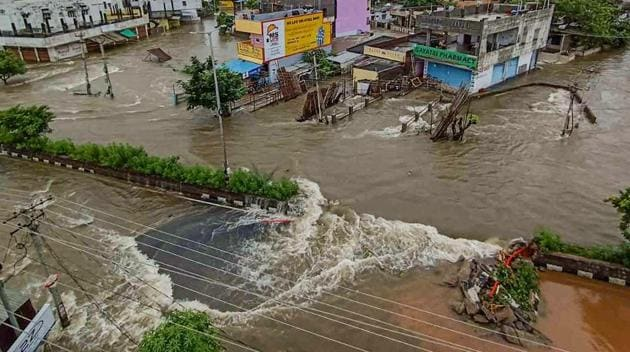

History Of Weather
People have attempted to predict the weather for centuries. The Babylonians used cloud formations and astrology to forecast conditions
in 650 BCE. Aristotle's Meteorologica, written about 350 BCE, identified weather patterns. Theophrastus also compiled the Book of Signs,
a book on weather forecasts. Weather prediction lore in China dates back to at least 300 BCE, around the same period as ancient Indian
astronomy developed weather-prediction methods. Observed cycles of events, also known as pattern recognition, is used in ancient weather
forecasting methods. It has been noted, for example, that if the sunset was especially red, the next day was usually sunny. This knowledge was
passed down over the years, resulting in weather lore. However, not all of these forecasts are accurate, and many of them have been proved to be
unreliable after being subjected to stringent statistical research.
WHAT IS WEATHER FORECAST ?
.jpeg)
Weather Forecasting is a prediction of the state of atmosphere for a given location using the application
of service and technology. This includes temperature, rain, cloudiness, windspeed and humidity. Weather Warning
are special kind of short Range Forecast carried out for the Protection of Human life.
A Weather Map also known as Synoptic Weather Chart displays various
meteorological features across a particular area at a particular point.
Such maps have been in use since the
mid 19th century and are used for weather forecasting purpose.
Types of Weather Forecasting
Short Range Forecasting:
This forecasting will last 1-2 days.
The weather has an immense influence on human daily patterns, the production of food, and personal comfort zones.
Forecasting plays an important role in planning current and future activities.
However, accurate forecasting is very crucial. Forecasting is an important tool for various analyses.
Medium Range Forecasting:
This kind of forecasting lasts 3-4 days to 2 weeks. Medium-term forecasts are made for small strategic resolutions in correlation with the nature of the business.
They are very important in the area of business budgeting and development and it is from this forecast that
company budgets are decided. inaccurate forecasting can have serious impacts on the rest of the organization,
The time of medium range forecast is usually 1 year.
Long-Range Forecasts:
This forecasting is for times longer than four weeks. Long-term forecasts are for mainly major upcoming strategic decisions to be taken within an organization and for the organization
They focus very much on how to use resources in an optimum manner. They deal with basic items rather than specific items.
TOOLS USED FOR WEATHER FORECAST
- There are Various Tools Used For Weather Forecasting :-
-
Doppler radar

Weather radar, also called weather surveillance radar (WSR) and Doppler weather radar, is a type of radar used
to locate precipitation, calculate its motion, and estimate its type (rain, snow, hail etc.). Modern weather radars
are mostly pulse-Doppler radars, capable of detecting the motion of rain droplets in addition to the intensity of the precipitation
Doppler radar detects all types of precipitation, the rotation of thunderstorm clouds, airborne tornado debris,
and wind strength and direction.
-
Satellite Data
Satellite data provides satellite imagery and earth observation data of the earth's surface and its atmosphere.
Satellites also provide images of other planets. Resolution images of the earth indicate changes in land cover,
cloud cover, ocean levels, ice cover, and atmospheric composition. This data is used for tracking weather patterns
and climate changes. It is also used for powering multiple research projects.
-
Super Computers
The supercomputers are primarily used to generate forecast models, which are used by meteorologists around to country to
create their own weather forecasts.
Prathyush and Mihir are the supercomputers established at Indian Institute of Tropical Meteorology (IITM), Pune and National Centre for Medium Range Weather Forecast (NCMRWF), Noida respectively.
Benefits of Weather Forecast
-
Public Safety

Weather forecasts are critical for public safety, especially during severe weather events. They help emergency
services plan for and respond to disasters such as floods, hurricanes, and wildfires.
Cyclone Amphan (2020): In May 2020, Cyclone Amphan hit the eastern coast of India, affecting the states of West
Bengal and Odisha. The India Meteorological Department (IMD) provided accurate weather forecasts and warnings in advance,
which helped the authorities to evacuate over 3.3 million people and prepare for the storm. Due to these efforts, the loss of life was limited
-
Travelling

The tourism industry relies heavily on weather forecasts to plan for and promote various outdoor activities and events. Accurate weather forecasts can help attract visitors and increase revenue.
-
Agriculture

Farmers rely heavily on weather forecasts to plan their crop planting and harvesting schedules, as well as to make decisions about irrigation, fertilization, and pest control. Accurate weather
forecasts can help increase crop yields and reduce losses due to weather-related disasters.
-
Transportation

Weather forecasts are essential for transportation planning, including air travel, shipping, and road and rail transportation. They help prevent accidents, delays, and cancellations, which can have a significant economic impact.